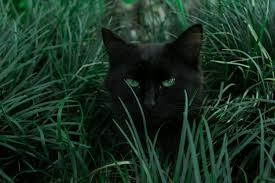
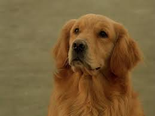
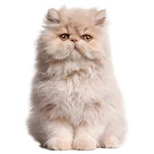
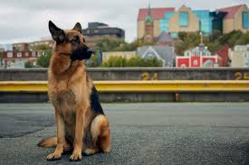
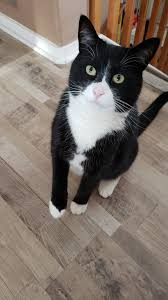
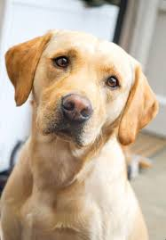
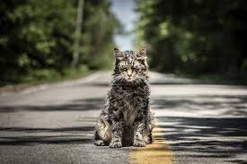
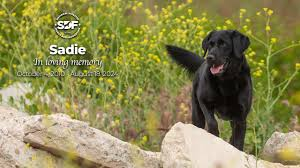
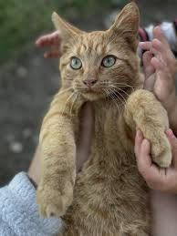

Max the Dog
A friendly dog looking for a home!

Whiskers the Cat
Whiskers loves cuddles and is very playful.

Buddy the Dog
Buddy is a loyal companion looking for a loving home.

Fluffy the Cat
Fluffy enjoys laying in the sun and playing with toys.

Rex the Dog
Rex is very active and loves playing fetch.

Mittens the Cat
Mittens loves attention and cuddles.

Charlie the Dog
Charlie loves walks and playing with kids.

Leo the Cat
Leo is calm and enjoys being around people.

Sadie the Dog
Sadie is a gentle and loving dog who gets along with everyone.

Oliver the Cat
Oliver enjoys climbing trees and playing with strings.